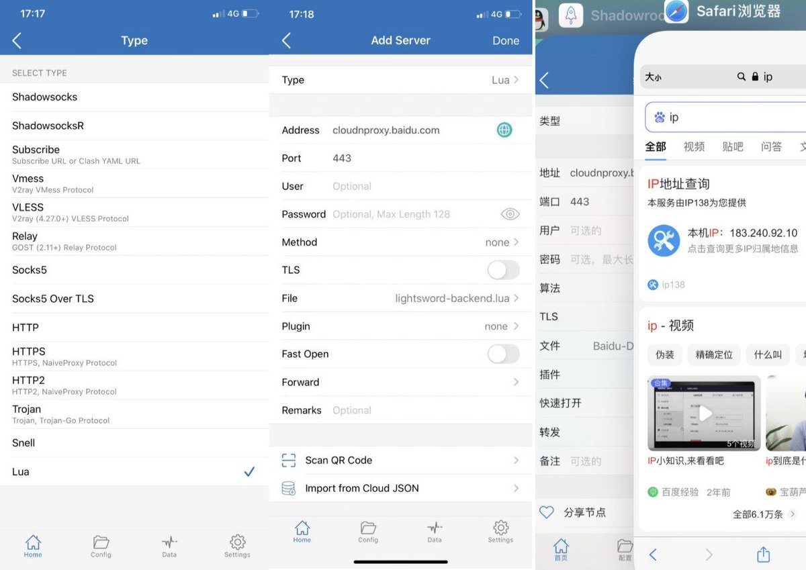
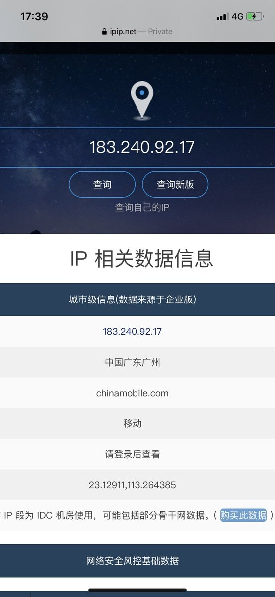
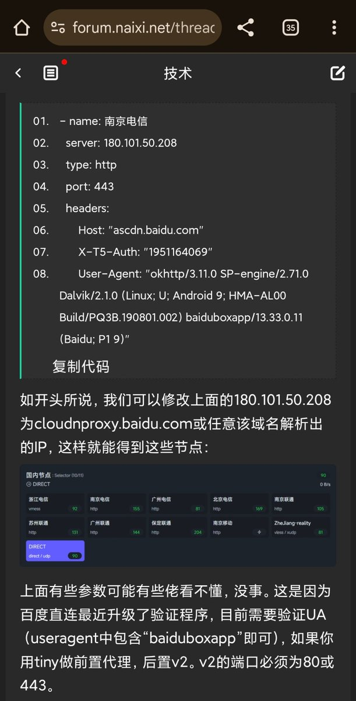
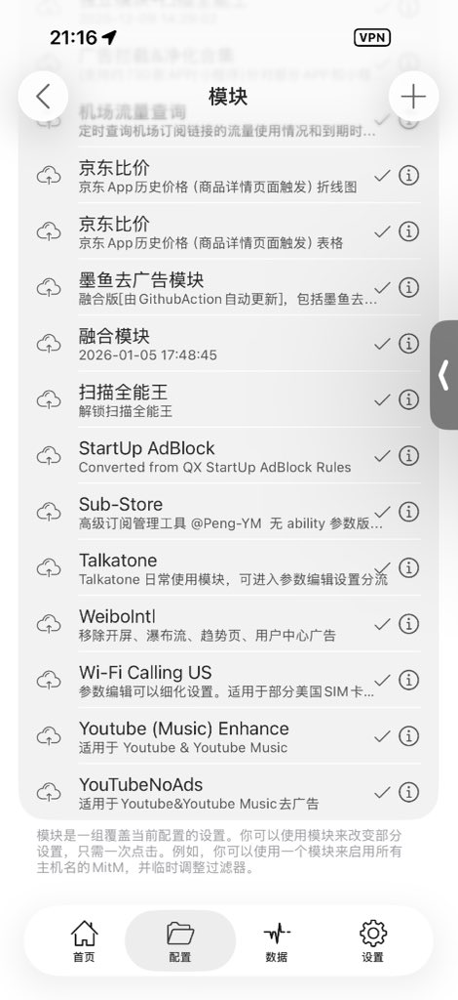

我也分享一个Shadowsocks（小火箭）回国VPN攻略，给各位在海外的游子支招，小火箭在海外也可以配合lua解锁国内流媒体，当然Clash也可以，结尾会说～
百度直连域名为cloudnproxy[.]baidu[.]com，端口443的HTTPS代理服务器（proxy）。国内玩免流的都用它当跳板，只不过百度给代理服务器做了User-Agent (UA)校验，目前需要验证UA（useragent中包含“baiduboxapp”即可）。得益于百度服务器宽带高、遍布全国，你可以手动查询域名背后的IP地址自行解析，就能得到一堆“回国节点”🤗
Shadowsocks支持lua脚本，链接我会放在评论区里，也可以让Grok给你写一个，不难！
当然Clash也是支持的，配置文件格式按照图中的写就行。
只不过你要把分流给做好（你也不想解锁的时候，送个GFW给你吧～
当然百度的IP是IDC宽带，可能在有些IP库识别会存在风险，还是别用它登社交媒体（如微博）了，不保证封号！

百度直连域名为cloudnproxy[.]baidu[.]com，端口443的HTTPS代理服务器（proxy）。国内玩免流的都用它当跳板，只不过百度给代理服务器做了User-Agent (UA)校验，目前需要验证UA（useragent中包含“baiduboxapp”即可）。得益于百度服务器宽带高、遍布全国，你可以手动查询域名背后的IP地址自行解析，就能得到一堆“回国节点”🤗
Shadowsocks支持lua脚本，链接我会放在评论区里，也可以让Grok给你写一个，不难！
当然Clash也是支持的，配置文件格式按照图中的写就行。
只不过你要把分流给做好（你也不想解锁的时候，送个GFW给你吧～
当然百度的IP是IDC宽带，可能在有些IP库识别会存在风险，还是别用它登社交媒体（如微博）了，不保证封号！




Shadowrocket (小火箭) 实用模块推荐与配置指南
最近折腾 VPS，尝试了 Surge 和 Quantumult X，发现配置门槛稍高。
转回头研究 Shadowrocket，发现利用“模块”功能也能实现强大的分流与重写。整理了一些高质量的模块仓库和使用技巧，分享给大家。
精选模块仓库资源 https://t.co/FjAw0uuarq https://t.co/2LR2gBuTKu
最近折腾 VPS，尝试了 Surge 和 Quantumult X，发现配置门槛稍高。
转回头研究 Shadowrocket，发现利用“模块”功能也能实现强大的分流与重写。整理了一些高质量的模块仓库和使用技巧，分享给大家。
精选模块仓库资源 https://t.co/FjAw0uuarq https://t.co/2LR2gBuTKu